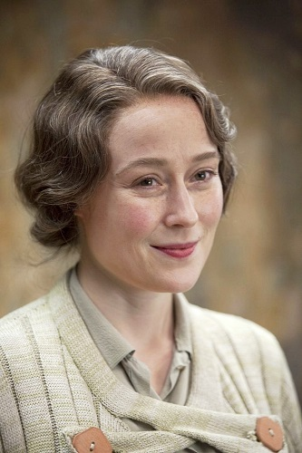

GM NPC'leri Listesi
Sihir BakanlığıNPC İsmi: Madam Deni Béringer
NPC'nin Hogwarts Binası/Mensubu Olduğu Hizip: Beauxbatons Sihir Akademisi 1833 mezunu, Merlin Tılsım Kulübü mensubu 33. Seviye. 51 yaşında.
NPC'nin Fiziksel Özellikleri: Bir bürokrata göre şirin addedilebilecek bir siması olsa da, çoğunlukla sakin ve ciddi bir intiba bırakır. Kısa boylu fakat duruşuyla dikkatleri üzerine toplayabilecek bir kadındır. Çoğunlukla soğukkanlı bir tavra sahip olsa da, onu yakından tanıyanlar gerektiğinde nasıl da yerinde durmadığını bilirler.
NPC'nin Kişilik Özellikleri:[spoiler]Çoğunlukla "Madam" lakabıyla hitap edilen Bayan Béringer, uzunca bir süre Sihirsel Yasal Yaptırım Dairesi başkanlığı yapmış, sonrasında ise Sihir Bakanı yardımcısı olarak görev almıştır. Bundan evvelinde ise Fransız Sihir Bakanlığında çeşitli görevlerde vazife almış olduğundan Avrupa Büyücedünyasını yakından tanır. Resmiyete ve nezakete filhakika önem gösterir. Adabı muaşeret konusunda titizdir. Yine de sahip olduğu kaynaklar ve bilgiye erişimi hususunda çok sayıda dedikodu dönmesinden ötürü, rakiplerinin dahi yanında tedbiri elden bırakmadığı birisi olduğu da aşikardır. Bakan Kellington'a zamanında yakın olması ve Sihir Bakanlığı içerisindeki hızlı yükselişi, doğru bildiğini yapan dürüst politikacı imajının bir maske olduğunu düşündürmektedir kimselere. Lakin işin aslı, pek bilinmez. Yine de yetkin bir bürokrat olmasıyla, Herr Motke komplosundaki rolüyle ve Kellington'ın ölümü sonrasında büyücedünyanın huzuru için gösterdiği çaba sayesinde bakanlığın geleceğinde kilit bir rol oynayacağı tahmin edilebilir.[/spoiler]
NPC'nin Kurgudaki Yeri: Britanya Sihir Bakanı Yardımcısı
NPC'nin Diğer Oyuncuların Kullanımına Açıklığı: GM Kontrolü
NPC Portresi:[spoiler]

[/spoiler]
NPC İsmi: Egnast Twinkle (E.T.)
NPC'nin Hogwarts Binası/Mensubu Olduğu Hizip: Hufflepuff 1826 mezunu. Bir dönem La Fay Şifacılar Topluluğunda faaliyet gösterdiği biliniyor. Seherbazlık kariyerine başladıktan sonra buradan ayrılıyor. Mahşerin 4 Avcısı tarafından Merlin Mührünün kırılmasında kullanılması sebebiyle yaşlılık gerekçesiyle Başseherbazlık mevkisinden ayrılıyor. Madam Bêringer'in ısrarlarıyla, Gizem Dairesi Başkanlığına atanıyor. 57 yaşında.
NPC'nin Fiziksel Özellikleri: Bir metreden daha kısa bir boy, kemerli uzun bir burun, ince parmaklar... Evet, doğru tahmin ettiniz. Kendisi bir yarı-goblin! Kavisli kaşları, giderek seyrelen saçları ve gözünden çıkarmadığı monokl sayesinde benzerlerinden kolayca ayırt edilebilecek bir görünüşe sahip olduğunu söyleyebiliriz. Genelde şık ve beyefendi giyimiyle dikkat çekmesine rağmen, bu giyim kuşamı kimilerince pek rüküş, kimilerince de fazla abartılı bulunur.
NPC'nin Kişilik Özellikleri:[spoiler]Birinci sınıf bir seherbaz, işinin ehli bir dedektiftir. Zamanında görev aldığı Muggle'ların kenar mahallelerinde büyüye şahit olmuş büyüsüzlere uyguladığı aşırı yöntemler, halen dillerdedir. Tüm o şaşalı giyim kuşamına rağmen, yaşadıklarından olsa gerek bir hayli de küfürbazdır. Ağzına geleni söylemekten asla gocunmaz. Bunda, seherbazlığın getirdiği o dokunulmazlığın bir payı olduğunu söylemek de mümkündür. Asabi ve ateşli bir yapısı vardır. Beyefendi stili giyim kuşamına tamamen tezat olan karakteri, Egnast Twinkle'ı Seherbaz Büroda gayet şahsına münhasır biri kılmış, Goblin İsyanının süprüntüleri olan oluşumlara karşı katı ve acımasız tutumuyla büyücedünya insanları için sadakatini kanıtlamış ve Baş Seherbazlığa kadar yükselmesine olanak tanımıştır.[/spoiler]
NPC'nin Kurgudaki Yeri: Gizem Dairesi Başkanı
NPC'nin Diğer Oyuncuların Kullanımına Açıklığı: GM Kontrolü
Potansiyel Kurgu Çengelleri:[spoiler]- Egnast Twinkle'ın oğlunun Quidditch oynadığı, denilene göre neredeyse gün aşırı bir maçının olduğu, Bay Twinkle'ın işkolikliği yüzünden sürekli bu maçları kaçırdığı ve her defasında da bundan "Yine oğlumun Quidditch maçını kaçırdım!" şeklinde hayıflandığı Seherbaz Büroda herkesçe bilinen bir gerçektir.
- Cadı eşinden boşandıktan sonra depresyonda olduğu, yüksek dozda rom ve ateş viskisi içtiği ve giderek daha huysuz birisi haline geldiği söylenmektedir.
- Kadınların karşı koyamadığı bir cazibesi vardır Bay Twinkle'ın. Kendisi ne kadar huysuz, asabi yahut agresif olursa olsun, bir şekilde muhtelif ortamlarda bazı kadınların ilgisini topladığı muntazam bir şekilde gözlemlenebilir. Bunun nedeni olarak Seherbaz Büro çalışanların geliştirdiği bir teoriye göre; Bay Twinkle'ın, kadınların gözlerine perde indiren ve kendisini iki metreye yakın, sarışın ve geniş vücutlu gösteren bir lanetle kutsandığı iddia edilmektedir.
- Özellikle boşanma arifesinde Bay Twinkle'ın sihirsel bir takım hastalıkları sebebiyle St. Mungo'ya yatırıldığı iddia edilse de, bu iddiayı destekleyen somut bir kanıt bulunmamaktadır.
- Ağzı bozuk olmasından ötürü Bay Twinkle'ın şüphelilere sık sık küfür ettiği, hatta sorgu esnasında muhtelif büyülerle suçluların ağzından laf alabilmek için aşırı şiddetli yöntemlere başvurduğu... Ah! Tamam, vurmayın! Lütfen memur bey, biz burada işimizi yap- [/spoiler]
NPC Portresi:[spoiler]

[/spoiler]
HogwartsNPC İsmi: Vivienne Bates
NPC'nin Hogwarts Binası/Mensubu Olduğu Hizip: Slytherin 1815 mezunu, Attar Hür Kahinler Cemiyeti'nin eski üstatlarından. 10 yıl önce bilinmeyen bir sebeple cemiyetten ayrılmış ve halk arasında kovulduğu söylentisinin yayılmasına sebep olmuştur.
NPC'nin Fiziksel Özellikleri: Sarının canlı bir tonuyla parlayan uzun saçlarının arasından bakan yeşil gözleri her zaman hayatının en ilgi çekici sahnesini izliyormuşçasına ardına kadar açıktır. Devirdiği 68 yıla rağmen dinç ve genç görünür. Sürekli hareket halindedir ve uzun bacaklarıyla attığı devasa adımlar sayesinde daima koşuyormuş izlenimi bırakır.
NPC'nin Kişilik Özellikleri: Takibi imkansız kılacak kadar hızlı ve bilmecelerle dolu konuşmasını anlayan kişilerin iddiasına göre oldukça iyi bir mizah duygusu vardır ve bolca şaka yapar. Fakat bütün bu mizahşörlüğün, geçmişte peşinden koştuğu karanlığı unutabilmek (veya unutturabilmek) için ustaca çektiği bir perde olduğuna inanılır.
Hayatının ilk yarısında onu tanıma şansına erişmiş olanlara göre kehanet konusunda büyük bir yeteneği vardır ve bu yeteneğini insanlara yardımcı olmak için kullanmıştır. Ne var ki, cemiyette ilerleyip bilgi açlığı da mevkisiyle birlikte büyüyünce kendisini toplumdan dışlamış, büyünün karanlık dallarına merak salmıştır. Yasaklı bilgilerin peşinde yıllar süren kovalamacasına son verip döndüğünde akıl sağlığından süpheye düşürecek şekilde davranmaya ve konuşmaya başlamıştır. Dahası kehanet yeteneği de deforme olmuştur, gerçekleşmesi imkansız öngörüler zırvalar durur.
Yaşadığı değişime rağmen hala güçlü bir büyücü olarak görülmesi ve geçmişte edindiği dostlar sayesinde Hogwarts'ın müdür makamına geldiği günden beri şatoda kimsenin hesabını bile tutmaya yetişemediği yenilikler, kural değişiklikleri,inşaatlar yapıp durmuştur. Çılgınlığın pençesindeki kehanetlerinin beslediği korkuları yenmek için okulda tam olarak kaç değişikliğe imzasını attığı bilinmemektedir.
NPC'nin Kurgudaki Yeri: Hogwarts Müdürü
NPC'nin Diğer Oyuncuların Kullanımına Açıklığı: GM Kontrolü
NPC Portresi:[spoiler]

[/spoiler]